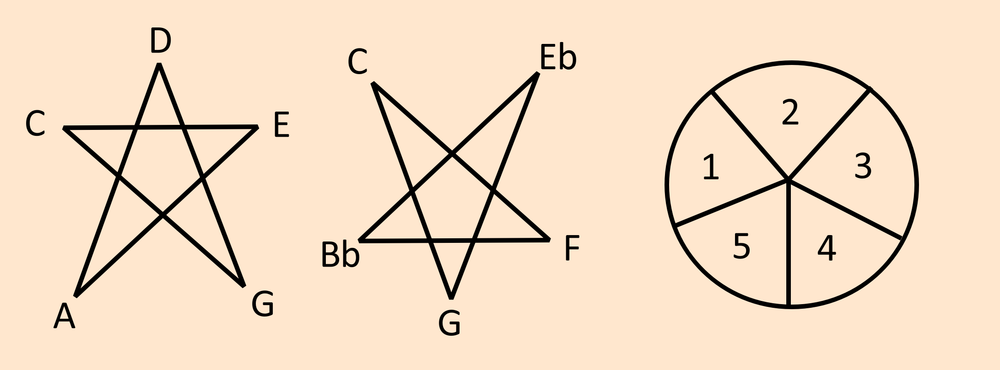

Music scales can be formed numerically. Pick any number from 1 to 12, this is how many notes per octave it will contain.
With 5 we commonly use a pentagram or pentacle to represent it. This is commonly seen in 5 element magic and theology systems.
Geometry

Correspondences
| C | D | E | G | A |
|---|---|---|---|---|
| Air | Electromagnetism | Fire | Water | Earth |
| Windy | Damp | Hot | Cold | Dry |
| Index | Thumb | Middle | Ring | Pinky |
| Left Arm | Head | Right Arm | Right Leg | Left Leg |
| Smell | Hearing | Sight | Taste | Touch |